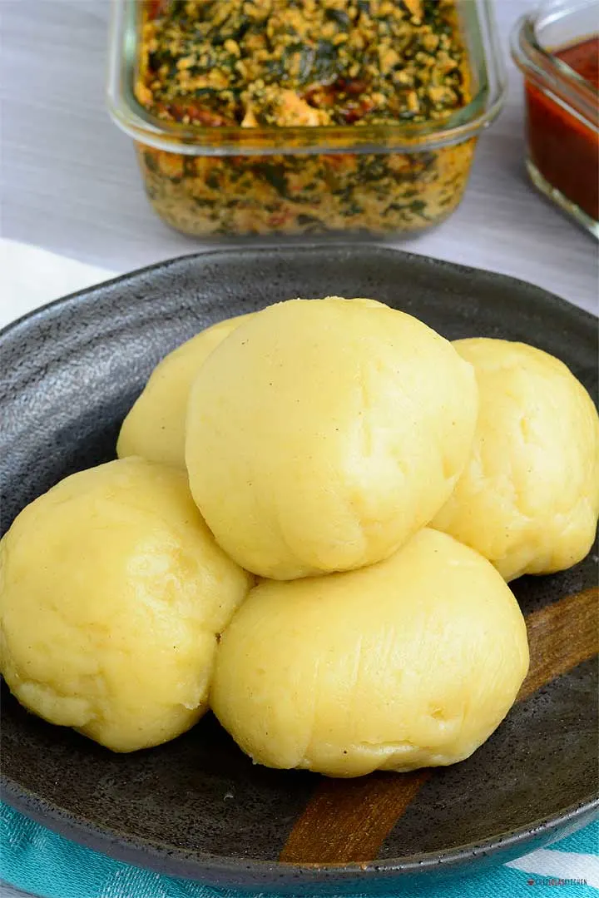

Fufu

Description
Foofoo is made from cassava, which is also known as yuca. It is a starchy root vegetable, similar to sweet potatoes, russet potatoes, and yams. It can be fried, baked, and prepared just like potatoes; however, it becomes very smooth, doughy, and elastic when made into fufu.
Ingredients
- cassava flour
- maize flour
- polenta
- Combine the cassava flour, maize flour and polenta with the cup of cold water.
- Bring three cups of water to the boil with the salt.
- Stirring constantly, pour the wet flours into the boiling water. Continue cooking on a medium heat, beating well, for 30 minutes or until you have a thick dough.
- Grease a small bowl with the oil. Scoop a dollop of fufu into the bowl and shake it around to form into a smooth ball. Tip that ball onto a greased serving plate. Repeat this process to use all the fufu.
- Serve the fufu warm or at room temperature.